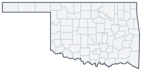

Historical county changes, 1790–1990 › Oklahoma

| Name↕ | Unit↕ | Existed↕ | FIPS↕ |
|---|---|---|---|
| Adair County | county | 1907–1990 | 40001 |
| Alfalfa County | county | 1907–1990 | 40003 |
| Atoka County | county | 1907–1990 | 40005 |
| Beaver County | county | 1890–1990 | 40007 |
| Beckham County | county | 1907–1990 | 40009 |
| Blaine County | county | 1900–1990 | 40011 |
| Bryan County | county | 1907–1990 | 40013 |
| Caddo County | county | 1907–1990 | 40015 |
| Canadian County | county | 1890–1990 | 40017 |
| Carter County | county | 1907–1990 | 40019 |
| Cherokee County | county | 1907–1990 | 40021 |
| Cherokee Nation | county | 1890–1907 | |
| Cheyenne and Arapaho Reservation | county | 1890 | |
| Cheyenne and Arapahoe Reservation | county | ||
| Chickasaw Nation | county | 1890–1907 | |
| Choctaw County | county | 1907–1990 | 40023 |
| Choctaw Nation | county | 1890–1907 | |
| Cimarron County | county | 1907–1990 | 40025 |
| Cleveland County | county | 1890–1990 | 40027 |
| Coal County | county | 1907–1990 | 40029 |
| Comanche County | county | 1907–1990 | 40031 |
| Cotton County | county | 1920–1990 | 40033 |
| Craig County | county | 1907–1990 | 40035 |
| Creek County | county | 1907–1990 | 40037 |
| Creek Nation | county | 1890–1907 | |
| Custer County | county | 1900–1990 | 40039 |
| Day County | county | 1900 | 40039.1 |
| Delaware County | county | 1907–1990 | 40041 |
| Dewey County | county | 1900–1990 | 40043 |
| Ellis County | county | 1907–1990 | 40045 |
| Garfield County | county | 1900–1990 | 40047 |
| Garvin County | county | 1907–1990 | 40049 |
| Grady County | county | 1907–1990 | 40051 |
| Grant County | county | 1900–1990 | 40053 |
| Greer County | county | 1890–1990 | 40055 |
| Harmon County | county | 1910–1990 | 40057 |
| Harper County | county | 1907–1990 | 40059 |
| Haskell County | county | 1907–1990 | 40061 |
| Hughes County | county | 1907–1990 | 40063 |
| Iowa Reservation | county | 1890 | |
| Jackson County | county | 1907–1990 | 40065 |
| Jefferson County | county | 1907–1990 | 40067 |
| Johnston County | county | 1907–1990 | 40069 |
| Kaw (Kansas) Reservation | county | 1890–1900 | |
| Kay County | county | 1900–1990 | 40071 |
| Kickapoo Reservation | county | 1890 | |
| Kingfisher County | county | 1890–1990 | 40073 |
| Kiowa County | county | 1907–1990 | 40075 |
| Kiowa, Comanche, and Apache Reservation | county | 1890–1900 | |
| Latimer County | county | 1907–1990 | 40077 |
| Le Flore County | county | 1907–1990 | 40079 |
| Lincoln County | county | 1900–1990 | 40081 |
| Logan County | county | 1890–1990 | 40083 |
| Love County | county | 1907–1990 | 40085 |
| Major County | county | 1907–1990 | 40093 |
| Marshall County | county | 1907–1990 | 40095 |
| Mayes County | county | 1907–1990 | 40097 |
| McClain County | county | 1907–1990 | 40087 |
| McCurtain County | county | 1907–1990 | 40089 |
| McIntosh County | county | 1907–1990 | 40091 |
| Modoc Reservation | county | 1890–1900 | |
| Murray County | county | 1907–1990 | 40099 |
| Muskogee County | county | 1907–1990 | 40101 |
| Nez Perce (Oakland) Reservation | county | 1890 | |
| Noble County | county | 1900–1990 | 40103 |
| Nowata County | county | 1907–1990 | 40105 |
| Okfuskee County | county | 1907–1990 | 40107 |
| Oklahoma County | county | 1890–1990 | 40109 |
| Okmulgee County | county | 1907–1990 | 40111 |
| Osage County | county | 1907–1990 | 40113 |
| Osage Reservation | county | 1890–1900 | |
| Otoe and Missouri Reservation | county | 1890–1900 | |
| Ottawa County | county | 1907–1990 | 40115 |
| Ottawa Reservation | county | 1890–1900 | |
| Pawnee County | county | 1900–1990 | 40117 |
| Pawnee Reservation | county | 1890 | |
| Payne County | county | 1890–1990 | 40119 |
| Peoria Reservation | county | 1890–1900 | |
| Pittsburg County | county | 1907–1990 | 40121 |
| Ponca Reservation | county | 1890–1900 | |
| Pontotoc County | county | 1907–1990 | 40123 |
| Pottawatomie County | county | 1900–1990 | 40125 |
| Pottawatomie Reservation | county | 1890 | |
| Pushmataha County | county | 1907–1990 | 40127 |
| Quapaw Reservation | county | 1890–1900 | |
| Roger Mills County | county | 1900–1990 | 40129 |
| Rogers County | county | 1907–1990 | 40131 |
| Sac and Fox Reservation | county | 1890 | |
| Seminole County | county | 1907–1990 | 40133 |
| Seminole Nation | county | 1890–1907 | |
| Seneca Reservation | county | 1890–1900 | |
| Sequoyah County | county | 1907–1990 | 40135 |
| Shawnee Reservation | county | 1890–1900 | |
| Stephens County | county | 1907–1990 | 40137 |
| Texas County | county | 1907–1990 | 40139 |
| Tillman County | county | 1907–1990 | 40141 |
| Tulsa County | county | 1907–1990 | 40143 |
| Wagoner County | county | 1907–1990 | 40145 |
| Washington County | county | 1907–1990 | 40147 |
| Washita County | county | 1900–1990 | 40149 |
| Wichita Reservation | county | 1890–1900 | |
| Woods County | county | 1900–1990 | 40151 |
| Woodward County | county | 1900–1990 | 40153 |
| Wyandotte Reservation | county | 1890–1900 |
Note: Decimals in FIPS codes come from Forstall, who gives every county a code, including counties that no longer exist. A county abolished between 1930 and 1990 keeps the code it had. However, a county which was abolished prior to 1930 never received a code. Such a county is given the code of the county which precedes it alphabetically plus a decimal to hold its place in the list.
Source: Richard L. Forstall (1996), Population of States and Counties of the United States: 1790 to 1990, U.S. Bureau of the Census (public domain). Always check a row against the scan it links to.